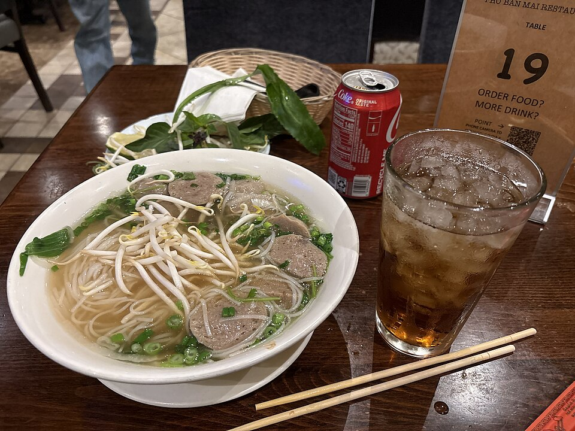

Pho is my absolute favorite food dish. It is a traditional Vietnamese noodle soup consisting of a rich, aromatic broth, delicate rice noodles, herbs, and tender meat. Here is one cool fact: The broth is typically simmered for hours—sometimes a whole day—with charred ginger, onions, and a unique blend of spices like star anise, cinnamon, and cloves to build its signature deep flavor profile.
Learn more about the history of pho